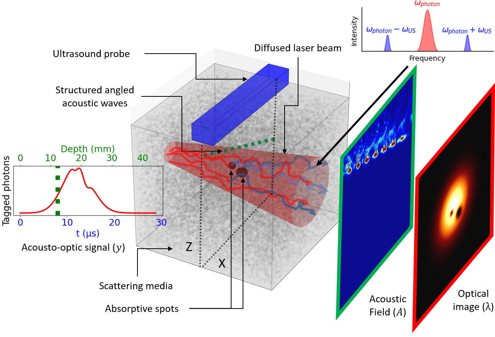
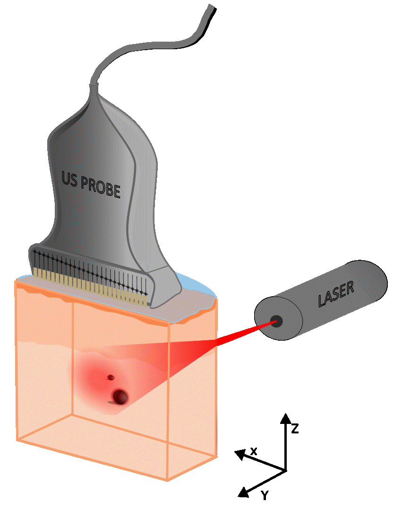
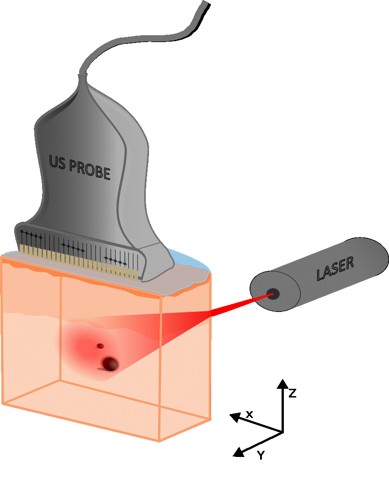

Introduction
Formation of an Acousto-Optic Signal
As its name suggests, acousto-optic is a bimodal imaging technique that combines acoustics and optics to reconstruct an optical image deep within a scattering medium. This is not possible with standard optical imaging modalities.

Optical Image \(\lambda\)
In a scattering medium, incident light deviates from its path when it encounters particles. Beyond a certain transport length, the incident photon loses memory of its initial direction. The transport length is given by:
\[ l^{*} = \frac{l_s}{1 - g} \]where \(l_s\) is the mean distance between scattering events, and \(g\) defines the directionality of the light. When \(g = 1\), light propagates in a straight line. In the case of biological tissues, \(g \approx 0.8 - 0.9\), the transport length is on the order of millimeters. Beyond this, multiple scattering dominates.
The solution to the diffusion equation for a point source in an infinite, homogeneous, and isotropic medium is given by:
\[ \Phi(\mathbf{r}, t) = \frac{1}{(4 \pi D t)^{3/2}} \exp \left( -\frac{r^2}{4 D t} \right) \]This corresponds to a 3D Gaussian distribution with variance \(2 D t\).
System matrix \(A\)
The system matrix \(A\) is a fundamental component in tomographic reconstruction, serving as the bridge between the unknown properties of the object and the measured data, enabling the reconstruction of images from indirect measurements.
Acousto-Optic Signal (AO Signal)
The optical refractive index \(n\) is proportional to the mass density \(\rho\) to the first order. Thus, as the ultrasonic wave propagates through the medium, it locally alters its refractive index:
\[ \mu = \frac{\delta n}{\delta \rho} \] \[ n(x, y, z, t) = n_0 + \mu P_m \sin \left( 2 \pi f_{US} t - K_{US} z \right) \]Assuming a monochromatic plane light wave, the electric field of the emitted wave is of the form:
\[ E(x, y, z, t) = E_M e^{j \left( 2 \pi f_i t - n K_i z \right)} \]When the monochromatic plane light wave passes through the acoustic field (of thickness \(e\)), it undergoes diffraction due to the periodic variation of the refractive index:
\[ \varphi(x, y, z, t) = \frac{2 \pi}{\lambda_i} n_0 e + \frac{2 \pi \mu}{\lambda_i} P_m \sin \left( 2 \pi f_{US} t - K_{US} y \right) \]Expanding in a second-order Taylor series:
\[ E(x, y+e, z, t) \approx E_M e^{j \varphi_0} \left[ \left( 1 - \frac{\delta \varphi^2}{4} \right) e^{j(2 \pi f_i t - n K_i z)} + \frac{\delta \varphi}{2} \left( e^{j 2 \pi (f_i + f_{US}) t - (n K_i z + K_{US} y)} - e^{j 2 \pi (f_i - f_{US}) t - (n K_i z - K_{US} y)} \right) \right] \]The two spectral components of the light modulated by the acoustic field at \(\pm f_{US}\) contain the information on the position of the acoustic wavefront.
The intensity of the tagged photons is proportional to:
\[ I_{tagged} \propto \left| E_{0} \right|^2 \cdot \left| \delta \varphi \right|^2 \]Detection by Interferometry of Ultrasounds
TO BE COMPLETED
Plane Waves

Structured Waves

Tomographic Reconstruction
Analytic Reconstruction (FBP)
iRadon Inversion Method
\[ I_{\text{rec}}(x, z) = \int_{-\theta_m}^{\theta_m} 2 \Re\left[\int_{\mathbb{R}^+} \tilde{s}(f_s, \theta, f_s) e^{2 i \pi x' f_s} f_s \mathrm{d} f_s\right] \mathrm{d} \theta \]iFourier Inversion Method
\[ I_{\text{rec}}(x, z) = \frac{1}{N_{\theta}} \sum_{-\theta_m}^{\theta_m} \left[\int_{\mathbb{R}^2} \tilde{s}(f_s, \theta, f_s) e^{2 i \pi(x' f_x + z' f_z)} \mathrm{d} f_x \mathrm{d} f_z\right] \]Algebraic Reconstruction (MLEM)
TO BE COMPLETED
Bayesian Reconstruction (MAP)
\[ \hat{\boldsymbol{\theta}}_{\text{MAP}} = \mathop{\arg\max}\limits_{\boldsymbol{\theta} \in \boldsymbol{\Theta}} \left( l(\mathbf{m} \mid \boldsymbol{\theta}) - \beta \sum_{j=1}^J \sum_{k \in N_j, k > j} \omega_{kj} \psi(\theta_k, \theta_j) \right) \]- Quadratic: \(\psi_{\text{Quad}} (\theta_k, \theta_j) = \frac{1}{2} \left( \frac{\theta_k - \theta_j}{\sigma} \right)^2\)
- Huber: \[ \psi_{\text{Huber}} (\theta_k, \theta_j) = \begin{cases} \delta |\theta_k - \theta_j| - \frac{\delta^2}{2} & \text{if } |\theta_k - \theta_j| > \delta, \\ \frac{1}{2} (\theta_k - \theta_j)^2 & \text{if } |\theta_k - \theta_j| \leq \delta. \end{cases} \]
- Relative Difference: \(\psi_{\text{RD}} (\theta_k, \theta_j) = \frac{(\theta_k - \theta_j)^2}{(\theta_k + \theta_j) + \gamma |\theta_k - \theta_j|}\)